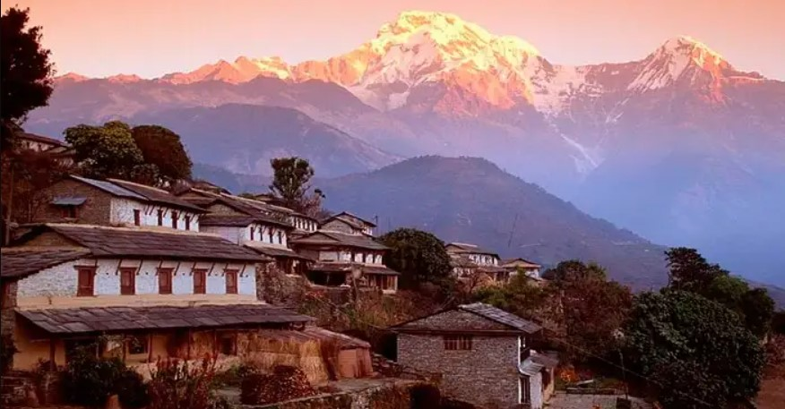

Let's travel together and make every moment of our journey in Nepal one to remember!
Nestled within the embrace of the mighty Himalayas, Nepal exudes a captivating beauty that enchants the soul of every traveler. From the serene rice terraces of its valleys to the awe-inspiring heights of Mount Everest, the world's tallest peak, Nepal's diverse landscapes leave an indelible mark on the heart. The rich tapestry of its cultures, adorned with ancient temples, vibrant festivals, and warm hospitality, invites one to explore its depths and revel in the harmony of tradition and modernity. Whether it's the bustling streets of Kathmandu, the tranquil lakes of Pokhara, or the untouched wilderness of its national parks, Nepal's beauty resonates not only in its breathtaking vistas but in the genuine smiles of its people, forging a connection that lingers long after one's journey through this enchanting land.